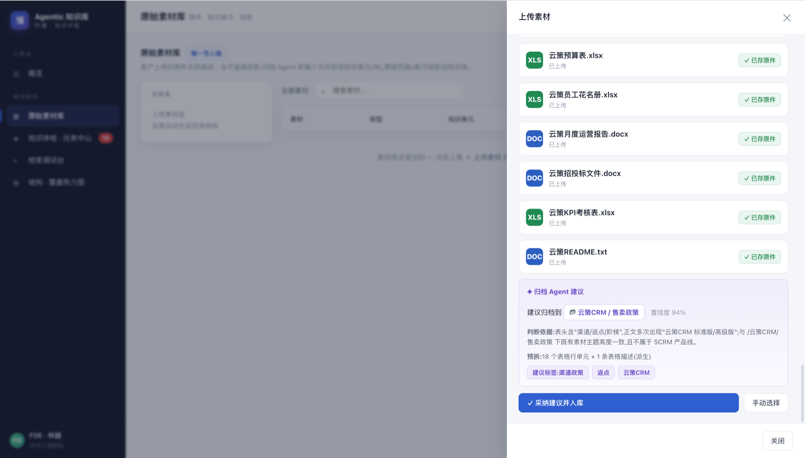
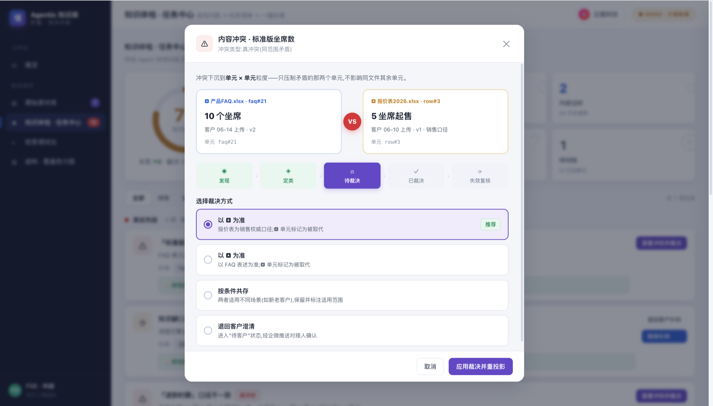
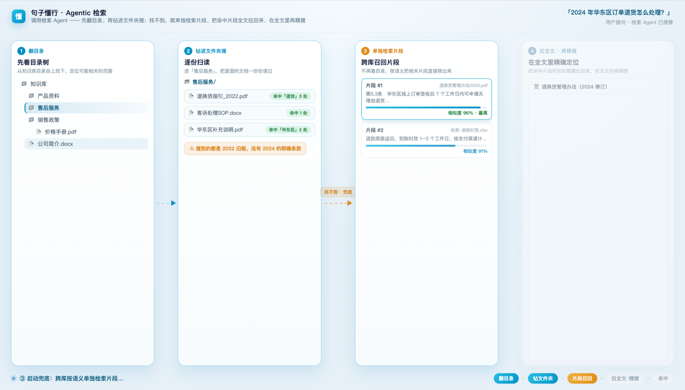

原件客户上传
报价表、FAQ、说明文档、运营报告先统一进入原始素材库。
句子懂行是 AI 员工的知识中枢。客户把资料丢进来，归档 Agent 自动拆成知识单元；体检 Agent 持续找冲突和缺口；检索 Agent 在指定范围内带出处作答。AI 答得准不准，先看知识库是否干净。
原件、知识单元、体检任务和检索路径在同一个中枢里持续更新。
页面只讲懂行最核心的一件事：把客户丢来的原始资料，变成干净、可体检、可追溯、可被 Agent 检索的知识资产。
报价表、FAQ、说明文档、运营报告先统一进入原始素材库。
归档 Agent 自动解析、拆分、标注来源，并建议归属目录。
冲突、缺口、过期、重复不继续污染答案，而是进入任务流。
检索 Agent 先圈范围，再逐层召回证据，最后带出处回答。
不铺截图墙，只保留能证明产品闭环的界面：资料怎么进来、知识怎么变干净、答案怎么被找出来。
上传后不是简单存文件，而是判断资料主题、建议归档目录、拆出可进入知识库的单元。FDE 不需要从零翻文件夹找脉络。

体检 Agent 把同范围内的真冲突、缺口、过期和重复内容找出来，给出处理路径：自动修、升级 FDE，或退回客户确认。

检索 Agent 会先翻目录树，钻进相关文件夹；证据不足时再检索片段、拉全文。每一步都能看到命中路径。

38 秒看完懂行的核心动作：客户资料怎么进入原始素材库，Agent 怎么逐级检索，又怎么把冲突知识变成可处理的任务。
懂行把维护知识库拆给三个 Agent：入库、体检、检索各管一段，避免知识越用越脏。
解析客户上传的原始素材，拆成知识单元，建议目录、标签和归属范围。
持续扫描冲突、缺口、过期、重复和表达歧义，把问题变成任务清单。
在指定知识范围内逐级检索，带路径、带片段、带出处回答，减少幻觉。
从一批客户资料开始，归档、体检、检索跑通后，再接入秒懂、秒回和其他 Agent 工作流。